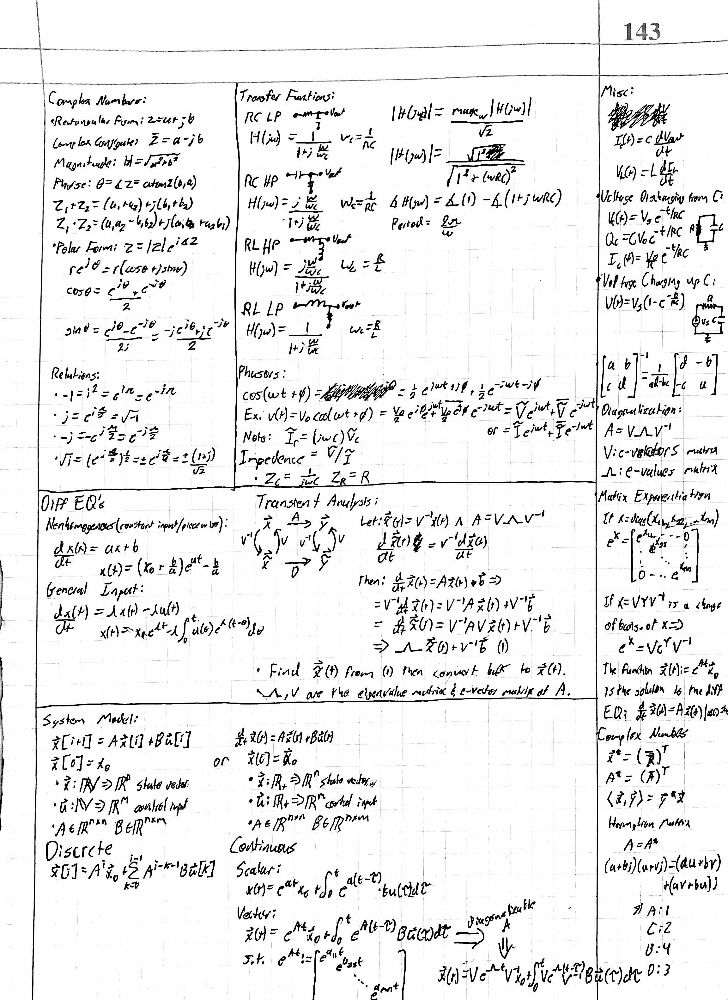
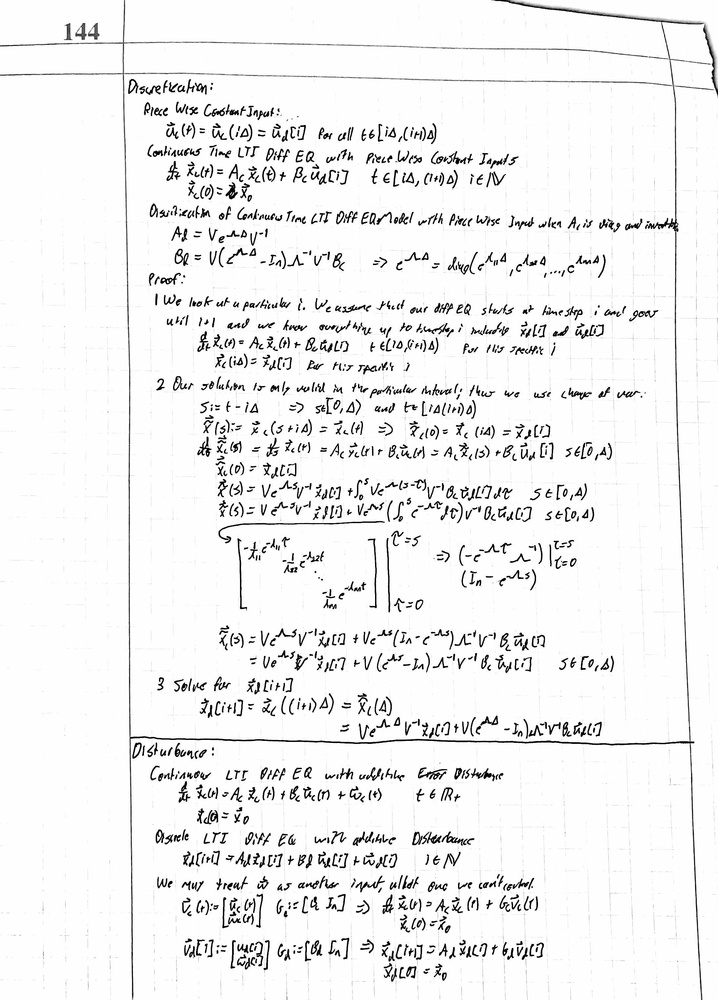
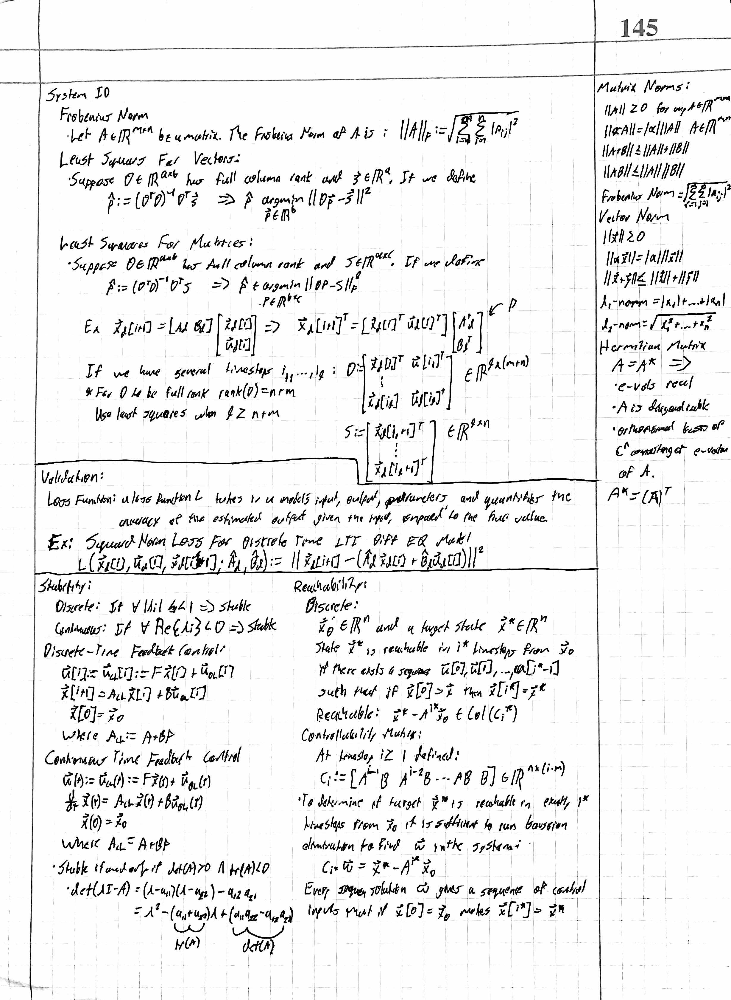
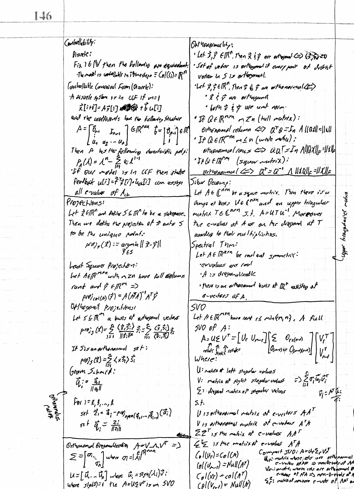
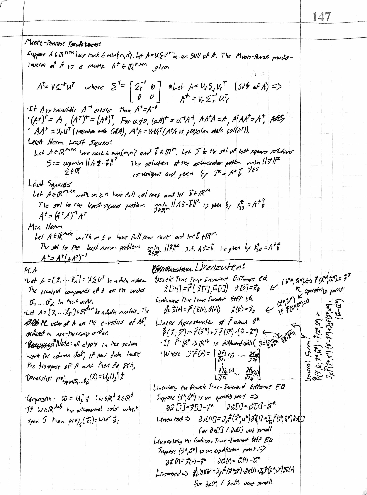

Content:
What is Covered?
~Complex Numbers Review
Rectangular Form, Polar Form, Magnitude and Phase, common relations
~Transient Analysis/Signal Processing
Solving Circuits with Continuous Time Differential Equations in scalar and vector forms, with change of base.
~Phasors and Filters
Phasor Domain/Transfer Functions, RC and RL Filters, Frequency Response, Bode Diagrams
~System Modeling
System Modeling with both continuous and discrete state representation. Discretization of continuous time systems, Disturbance, and Linearization.
~System Identification
Validation through a Loss Function, commonly the Squared Norm Loss Function.
~System Control
Stability, Reachability, and Controllability. Linear Algebra tools: Projections(LS Projection, Gram Schmidt, etc.), Orthonormality, Shur Decomposition, SVD("X-Ray of a Matrix"), Moore-Penrose Pseudoinverse, and PCA(Principal Component Analysis).




